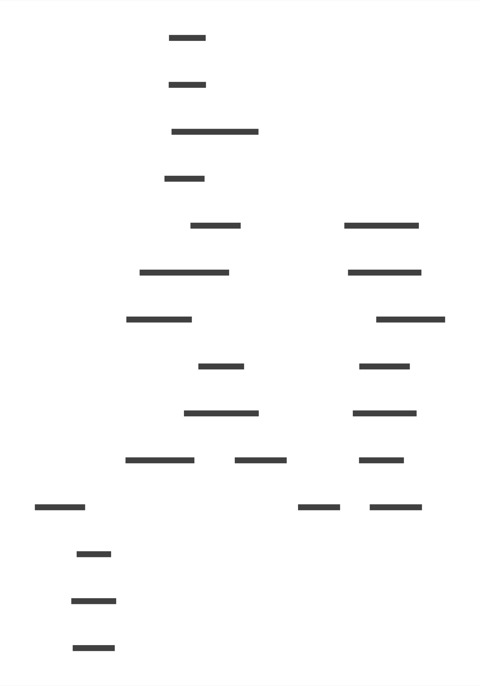

Abusing the type system
for fun and for profit
Conrad Ludgate
https://conradludgate.com/https://github.com/conradludgate/
https://twitter.com/conradludgate/

https://discord.com/invite/rust-lang-community


Serverless Postgres
https://neon.tech/
Raise your hands if you have
never written any Rust?
Raise your hands if you have
written a little bit of Rust?
Raise your hands if you have
used Rust for a few months?
Raise your hands if you have
used Rust for roughly a year?
Modern APIs, high-level features, and C-speed
[memory] safety by default, generally not a pain to write
It makes my friends think I’m smart


let key = creds.endpoint().expect("impossible");
if let Some(cached) = self.caches.node_info.get(key) {
info!(key, "found cached compute node info");
return Ok(cached);
}
let node = self.do_wake_compute(extra, creds).await?;
let (_, cached) = self.caches.node_info.insert(key, node);
info!(key, "created a cache entry for compute node info");
Ok(cached)


| username | conrad |
| endpoint | br-wispy-mode-73730913 |
| options | neon_timestamp:2024-03-23T11:00:00.000Z |
let key = creds.endpoint().expect("impossible");
if let Some(cached) = self.caches.node_info.get(key) {
info!(key, "found cached compute node info");
return Ok(cached);
}
let key: &str = &creds.cache_key;
if let Some(cached) = self.caches.node_info.get(key) {
info!(key, "found cached compute node info");
return Ok(cached);
}
let cache_key = format!(
"{}{}",
endpoint.as_deref().unwrap_or_default(),
neon_options(params).as_deref().unwrap_or_default(),
);
// Password hack should set the endpoint name.
// TODO: make `creds.endpoint` more type-safe.
assert!(creds.endpoint.is_some());
let cache_key = format!("");
pub struct ComputeUserInfo {
pub endpoint: Option<SmolStr>,
pub user: SmolStr,
pub cache_key: SmolStr,
}
pub struct ComputeUserInfo {
pub endpoint: SmolStr,
pub inner: ComputeUserInfoNoEndpoint,
}
pub struct ComputeUserInfoMaybeEndpoint {
pub endpoint: Option<SmolStr>,
pub inner: ComputeUserInfoNoEndpoint,
}
pub struct ComputeUserInfoNoEndpoint {
pub user: SmolStr,
pub cache_key: SmolStr,
}
pub struct ComputeUserInfoNoEndpoint {
pub user: SmolStr,
pub options: NeonOptions,
}
pub struct NeonOptions(Vec<(SmolStr, SmolStr)>);
impl ComputeUserInfo {
pub fn endpoint_cache_key(&self) -> SmolStr {
self.inner.options.get_cache_key(&self.endpoint)
}
}
pub struct EndpointCacheKey(SmolStr);
impl ComputeUserInfo {
pub fn endpoint_cache_key(&self) -> EndpointCacheKey {
EndpointCacheKey(self.inner.options.get_cache_key(&self.endpoint))
}
}
Key findings
Options are not your friends.
Use the newtype pattern.
if ((err = SSLHashSHA1.update(&hashCtx, &serverRandom)) != 0)
goto fail;
if ((err = SSLHashSHA1.update(&hashCtx, &signedParams)) != 0)
goto fail;
goto fail;
if ((err = SSLHashSHA1.final(&hashCtx, &hashOut)) != 0)
goto fail;
err = sslRawVerify(..);
if ((err = SSLHashSHA1.update(&hashCtx, &serverRandom)) != 0)
goto fail;
if ((err = SSLHashSHA1.update(&hashCtx, &signedParams)) != 0)
goto fail;
goto fail;
if ((err = SSLHashSHA1.final(&hashCtx, &hashOut)) != 0)
goto fail;
err = sslRawVerify(..);
if ((err = SSLHashSHA1.update(&hashCtx, &serverRandom)) != 0)
{
goto fail;
}
if ((err = SSLHashSHA1.update(&hashCtx, &signedParams)) != 0)
{
goto fail;
}
goto fail;
if ((err = SSLHashSHA1.final(&hashCtx, &hashOut)) != 0)
{
goto fail;
}
err = sslRawVerify(..);
fail:
SSLFreeBuffer(&signedHashes);
SSLFreeBuffer(&hashCtx);
return err;
if ((err = SSLHashSHA1.update(&hashCtx, &serverRandom)) != 0)
{
goto free_and_return;
}
if ((err = SSLHashSHA1.update(&hashCtx, &signedParams)) != 0)
{
goto free_and_return;
}
goto free_and_return; // err == 0. successful verification.
if ((err = SSLHashSHA1.final(&hashCtx, &hashOut)) != 0)
{
goto free_and_return;
}
SSLHashSHA1.update(&mut hashCtx, &serverRandom)?;
SSLHashSHA1.update(&mut hashCtx, &signedParams)?;
return Ok(());
SSLHashSHA1.final(&hashCtx, &mut hashOut)?;
sslRawVerify(..)?;
struct ExpectFinished {
config: Arc,
server_name: ServerName<'static>,
randoms: ConnectionRandoms,
suite: &'static Tls13CipherSuite,
transcript: HandshakeHash,
key_schedule: KeyScheduleHandshake,
client_auth: Option,
cert_verified: verify::ServerCertVerified,
sig_verified: verify::HandshakeSignatureValid,
}
let cert_verified = self.config.verifier.verify_server_cert(
end_entity,
intermediates,
&self.server_name,
&self.server_cert.ocsp_response,
now,
)?;
let sig_verified = self.config.verifier.verify_tls13_signature(
&construct_server_verify_message(&handshake_hash),
end_entity,
cert_verify,
)?;
impl ServerCertVerifier for WebPkiServerVerifier {
fn verify_server_cert(&self, ...) -> Result {
verify_server_cert_signed_by_trust_anchor_impl(
&cert,
&self.roots
)?;
verify_server_name(&cert, server_name)?;
Ok(ServerCertVerified::assertion())
}
}
$ rg "ServerCertVerified::assertion()" rustls/src -C 2
rustls/src/client/tls13.rs
429- // We *don't* reverify the certificate chain here: resumption is a
430- // continuation of the previous session in terms of security policy.
431: let cert_verified = verify::ServerCertVerified::assertion();
432- let sig_verified = verify::HandshakeSignatureValid::assertion();
433- Ok(Box::new(ExpectFinished {
rustls/src/client/tls12.rs
139- .into_owned(),
140- );
141: let cert_verified = verify::ServerCertVerified::assertion();
142- let sig_verified = verify::HandshakeSignatureValid::assertion();
143-
rustls/src/verify.rs
353- );
354- assert_eq!(
355: format!("{:?}", ServerCertVerified::assertion()),
356- "ServerCertVerified(())"
357- );
rustls/src/webpki/server_verifier.rs
255-
256- verify_server_name(&cert, server_name)?;
257: Ok(ServerCertVerified::assertion())
258- }
259-
state machines

pub(super) type NextState<'a> = Box<dyn State<ClientConnectionData> + 'a>;
pub(super) type NextStateOrError<'a> = Result<NextState<'a>, Error>;
pub(crate) trait State<Data>: Send + Sync {
fn handle<'m>(
self: Box<Self>,
cx: &mut Context<'_, Data>,
message: Message<'m>,
) -> Result<Box<dyn State<Data> + 'm>, Error>
where
Self: 'm;
fn export_keying_material(
&self,
_output: &mut [u8],
_label: &[u8],
_context: Option<&[u8]>,
) -> Result<(), Error> {
Err(Error::HandshakeNotComplete)
}
fn extract_secrets(&self) -> Result<PartiallyExtractedSecrets, Error> {
Err(Error::HandshakeNotComplete)
}
fn handle_decrypt_error(&self) {}
fn into_owned(self: Box<Self>) -> Box<dyn State<Data> + 'static>;
}
struct ExpectCertificateOrCertReq {
config: Arc<ClientConfig>,
server_name: ServerName<'static>,
randoms: ConnectionRandoms,
suite: &'static Tls13CipherSuite,
transcript: HandshakeHash,
key_schedule: KeyScheduleHandshake,
}
impl State<ClientConnectionData> for ExpectCertificateOrCertReq {
fn handle<'m>(
self: Box<Self>,
cx: &mut ClientContext<'_>,
m: Message<'m>,
) -> hs::NextStateOrError<'m>
where
Self: 'm,
{
match m.payload {
MessagePayload::Handshake {
parsed:
HandshakeMessagePayload {
payload: HandshakePayload::CertificateTls13(..),
..
},
..
} => Box::new(ExpectCertificate {
config: self.config,
server_name: self.server_name,
randoms: self.randoms,
suite: self.suite,
transcript: self.transcript,
key_schedule: self.key_schedule,
client_auth: None,
})
.handle(cx, m),
MessagePayload::Handshake {
parsed:
HandshakeMessagePayload {
payload: HandshakePayload::CertificateRequestTls13(..),
..
},
..
} => Box::new(ExpectCertificateRequest {
config: self.config,
server_name: self.server_name,
randoms: self.randoms,
suite: self.suite,
transcript: self.transcript,
key_schedule: self.key_schedule,
})
.handle(cx, m),
payload => Err(inappropriate_handshake_message(
&payload,
&[ContentType::Handshake],
&[
HandshakeType::Certificate,
HandshakeType::CertificateRequest,
],
)),
}
}
fn into_owned(self: Box<Self>) -> hs::NextState<'static> {
self
}
}
impl State for ExpectCertificate {
fn handle<'m>(
mut self: Box,
cx: &mut ClientContext<'_>,
m: Message<'m>,
) -> hs::NextStateOrError<'m>
where
Self: 'm,
{
self.transcript.add_message(&m);
let cert_chain = require_handshake_msg_move!(
m,
HandshakeType::Certificate,
HandshakePayload::CertificateTls13
)?;
// This is only non-empty for client auth.
if !cert_chain.context.0.is_empty() {
return Err(cx.common.send_fatal_alert(
AlertDescription::DecodeError,
InvalidMessage::InvalidCertRequest,
));
}
if cert_chain.any_entry_has_duplicate_extension()
|| cert_chain.any_entry_has_unknown_extension()
{
return Err(cx.common.send_fatal_alert(
AlertDescription::UnsupportedExtension,
PeerMisbehaved::BadCertChainExtensions,
));
}
let end_entity_ocsp = cert_chain.end_entity_ocsp();
let server_cert = ServerCertDetails::new(cert_chain.convert(), end_entity_ocsp);
Ok(Box::new(ExpectCertificateVerify {
config: self.config,
server_name: self.server_name,
randoms: self.randoms,
suite: self.suite,
transcript: self.transcript,
key_schedule: self.key_schedule,
server_cert,
client_auth: self.client_auth,
}))
}
fn into_owned(self: Box) -> hs::NextState<'static> {
self
}
}
Paseto gives you "versioned protocols". It's incredibly unlikely that you'll be able to use Paseto in an insecure way
v2.public.eyJleHAiOiIyMDM5LTAxLTAxVDAwOjAwOjAwKzAwOjAwIiwiZGF0YSI6InRoaXMgaXMgYSBzaWduZWQgbWVzc2FnZSJ91gC7-jCWsN3mv4uJaZxZp0btLJgcyVwL-svJD7f4IHyGteKe3HTLjHYTGHI1MtCqJ-ESDLNoE7otkIzamFskCA
{
"data": "this is a signed message",
"exp": "2039-01-01T00:00:00+00:00"
}
It MUST NOT be possible for a user to take a known public key (used by public tokens), and generate a local token with the same key that any PASETO implementations will accept.
trait Purpose: sealed::Sealed {}
struct PurposeLocal;
struct PurposePublic;
impl Purpose for PurposeLocal {}
impl Purpose for PurposePublic {}
trait KeyType: sealed::Sealed {
type Purpose: Purpose;
}
struct KeyTypeLocal;
struct KeyTypePublic;
struct KeyTypeSecret;
impl KeyType for KeyTypeLocal { type Purpose = PurposeLocal; }
impl KeyType for KeyTypePublic { type Purpose = PurposePublic; }
impl KeyType for KeyTypeSecret { type Purpose = PurposePublic; }
pub struct Key<KeyType: KeyType> {
key_data: Vec<u8>,
key_type: PhantomData<KeyType>,
}
pub type SymmetricKey = Key<KeyTypeLocal>;
pub type AsymmetricPublicKey = Key<KeyTypePublic>;
pub type AsymmetricSecretKey = Key<KeyTypeSecret>;
The version of a PASERK MUST match the version of the PASETO it's used with. For example, ak2.local.PASERK must be used withv2.local. tokens. Cross-version support is explicitly NOT permitted.
trait Version: sealed::Sealed {}
struct V3;
struct V4;
impl Version for V3 {}
impl Version for V4 {}
pub struct Key<KeyType: KeyType, Version: Version> {
key_data: Vec<u8>,
key_type: PhantomData<KeyType>,
version: PhantomData<Version>,
}
pub type SymmetricKey<V> = Key<KeyTypeLocal, V>;
pub type AsymmetricPublicKey<V> = Key<KeyTypePublic, V>;
pub type AsymmetricSecretKey<V> = Key<KeyTypeSecret, V>;
pub struct TokenBuilder<Purpose: Purpose, Version: Version> { ... }
pub struct EncodedToken<Purpose: Purpose, Version: Version> { ... }
impl<Version: Version> TokenBuilder<PurposePublic, Version> {
pub fn sign(self, key: AsymmetricSecretKey<Version>)
-> EncodedToken<PurposePublic, Version> { .. }
}
impl<Version: Version> TokenBuilder<PurposeLocal, Version> {
pub fn encrypt(self, key: SymmetricKey<Version>)
-> EncodedToken<PurposeLocal, Version> { .. }
}
pub struct DecodedToken<Purpose: Purpose, Version: Version> { ... }
impl<Version: Version> EncodedToken<PurposePublic, Version> {
pub fn verify_signature(self, key: AsymmetricPublicKey<Version>)
-> DecodedToken<PurposePublic, Version> { .. }
}
impl<Version: Version> EncodedToken<PurposeLocal, Version> {
pub fn decrypt(self, key: SymmetricKey<Version>)
-> DecodedToken<PurposeLocal, Version> { .. }
}
Any questions?
https://conradludgate.com/https://github.com/conradludgate/
https://twitter.com/conradludgate/